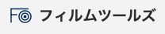
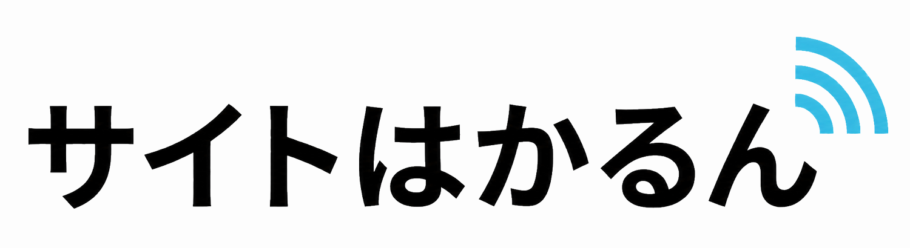

業務を整理し、
使われる仕組みへ。
製造業の現場、総務・経理、工程管理の経験をもとに、
業務情報を整理し、効率化につながるソフトウェアを開発します。
CivilTechは、実務に根差した業務改善システムをつくる会社です。
業務を効率化するために
現場の流れ、書類、データ、判断基準を整理し、日々の作業が楽になる仕組みに変えます。
業務情報の整理
属人化した手順や紙・Excelに分散した情報を整理し、システム化しやすい形にします。
現場業務の改善
製造業SEとしての経験を活かし、工程管理や日常業務の無駄を減らす仕組みを設計します。
Webシステム開発
必要な機能を絞り込み、実際に運用される業務システムやWebサービスを開発します。
データ活用
蓄積した情報を検索・集計・分析しやすくし、判断や改善に使える状態に整えます。
自社で開発・運営するサービス
小さく作り、運用しながら改善する。自社サービスの開発経験を、業務改善システムづくりにも活かしています。
BeanAtlas
コーヒー産地情報サービス
コーヒー産地を地図で探せるサービス。複雑な産地・品種・フレーバー情報を探しやすく整理しています。

Filmtools
軟包装フィルム向けツール
フィルム向けの変換ツール集。計算や判断に必要な情報を、すぐ使えるツールにしています。

サイトはかるん
Webサイト分析・レポートサービス
Googleと連携し、Webサイトの状況を自動で分析。月次レポートとAIのアドバイスで、改善のヒントをわかりやすく届けます。
業務改善ブログ
現場目線の改善記録
現場目線の業務改善ノウハウを発信。ツールづくりや仕組み化の考え方を記録しています。
現場で使われる形にする
いきなり作り始めるのではなく、業務の流れを整理してから必要な仕組みに落とし込みます。
現場の流れ、担当者、判断基準を確認
書類・Excel・データの関係性を整理
必要な機能と画面、データ構造を決定
運用しやすいWebシステムとして実装
使いながら改善し、業務に定着させる
現場経験と、実際につくったもの。
総務・経理から製造業のシステム開発へ。代表の経歴、工程管理の開発経験、自社サービスの実績と使用技術をご紹介します。